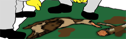

SJØFUGL
- Både havet og kystområdene er viktige leveområder for fugl. Sjøfugl bruker store havområder til næringssøk, og andre typer fugl bruker kystområdene til matsøk og hekking. Fugl er den arten som oftest blir mest påvirket av oljesøl på sjøen, og som ofte er mest synlig i media.
- Sjøfugl dør av drukning, nedkjøling eller utsulting når de får olje i fjærdrakten.
- Oljen gjør at fjærene klistrer seg sammen og fuglen mister da evnen til å oppholde seg på vann, samt evnen til å holde seg varm.
- Oljen kan også føre til forgiftning ved svelging. Selv små mengder olje kan forårsake stor skade.
- Etter Prestige-ulykken utenfor Spania i 2002 er det estimert at rundt 300 000 sjøfugl, i hovedsak lomvi, lundefugl og alke, omkom.
- I Norge er det estimert at så mye som 10 000 fugl kan ha omkommet etter både Rocknes og Server ulykken, mens mellom 2000 og 2500 fugl døde etter Full City sølet (ref. Akutt skadeomfang og herkomst for sjøfugl etter MV Full City-forliset, Lorentsen m.fl., 2010)
